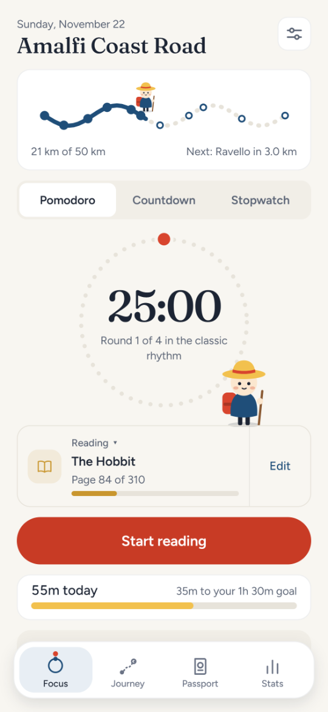
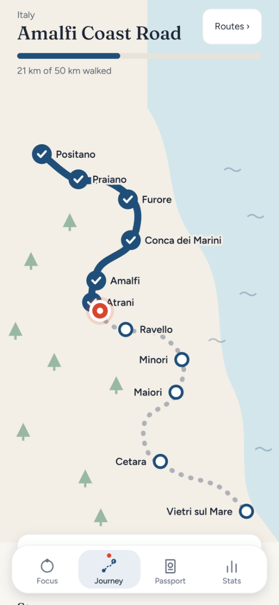
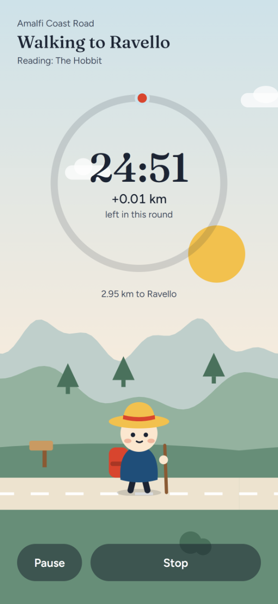
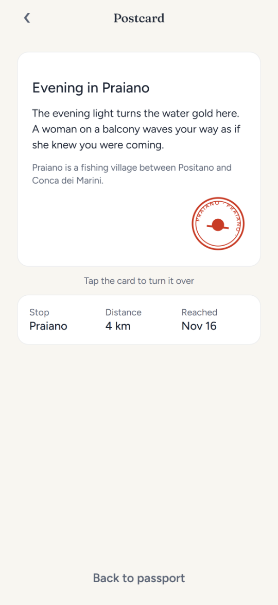
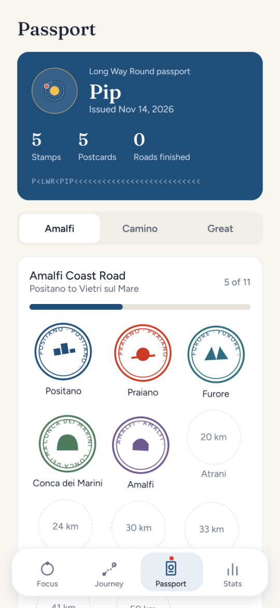
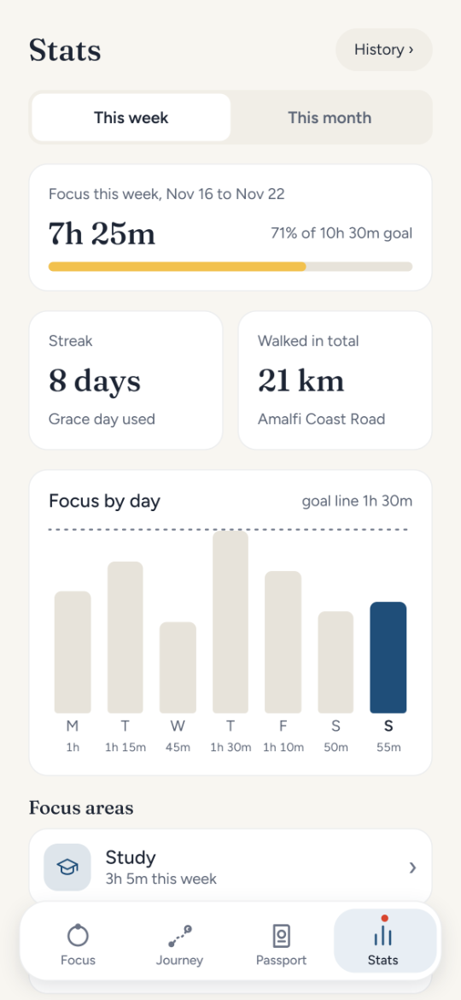

A focus timer for Android and iOS
Every focus minute is a step.
Start a session and your traveller sets off along a real road. Reach a town and a postcard arrives, with a stamp for your passport. Stop early and the distance you walked stays walked.
Free to start. Getting ready for Google Play and the App Store.


What you get
A timer with somewhere to go
The timer is the one you know. What changes is what a finished session gives you.
Focus is walking
While the timer runs your traveller walks the road. Every minute adds distance.
Real roads, real stories
Walk the Amalfi Coast, the Camino Portugués and the Great Ocean Road, with a postcard at every stop.
Forgiving by design
Rest at the inn, keep a streak over a grace day and fix any past session.
Pomodoro, countdown, stopwatch
Gentle, Classic and Deep rhythms, or your own focus and rest lengths.
For study and work
Reading, writing, study, work, language and creative focus areas that remember what you are doing.
Private by default
Sessions stay on your phone. No account needed.
Screens
Small, calm and a little bit pretty




Roads
Three real roads to walk
Each road has its own stops, stories and map.
Amalfi Coast Road
Cliff villages, lemon terraces and a road that never stops turning.
Pro, plannedCamino Portugués
A pilgrim path from Porto north to Santiago.
Pro, plannedGreat Ocean Road
Surf towns, rainforest and limestone stacks in the sea.
Take the first steps
Long Way Round is getting ready for Google Play and the App Store. Until it is listed, write to ask for early access.
Free to start. Getting ready for Google Play and the App Store.